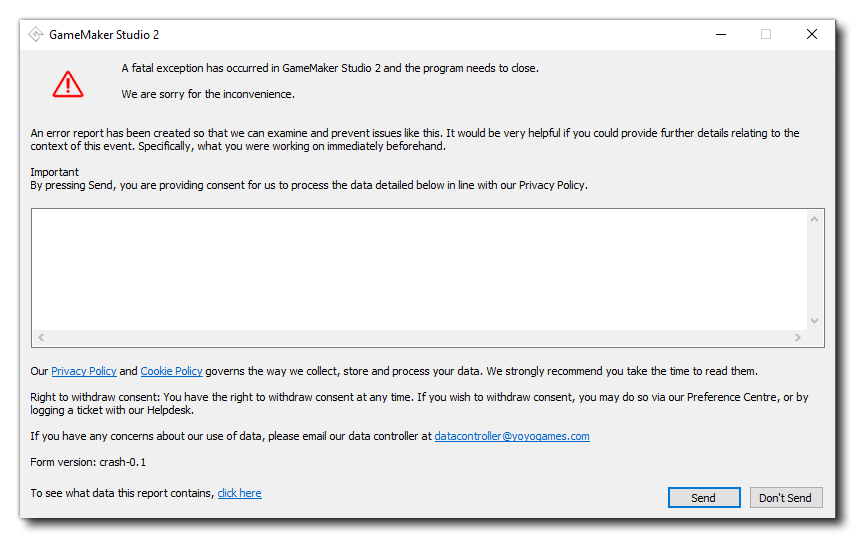

While great care has been taken when creating GameMaker Studio 2 to ensure that it is a stable and reliable tool, there is always the possibility that an issue could occur given the nature of the software and the operating systems it runs on. In most cases any errors will be caught by GameMaker Studio 2 and you may be prompted to save your projects and then close and restart the program. If this happens then we would request that you file a bug with the YoYo Games helpdesk. You can do this using the Report A Bug option from the Help Menu and, we ask that when doing so you give as much information as possible and also supply a link to the GameMaker Studio 2 ui.log file, which can be found in the following locations, depending on the OS:
On very rare occasions, if the error is severe, then the product may crash without giving the above mentioned warning, and if this happens then you will be shown the following window: 
This window will show you some of the crash report data that has been compiled by GameMaker Studio 2 and gives you the option to send it to YoYo Games so they can see what happened and fix the issue if possible in future updates. If you'd like to know exactly what data is being sent, then please see this article on the YoYo Games Helpdesk.